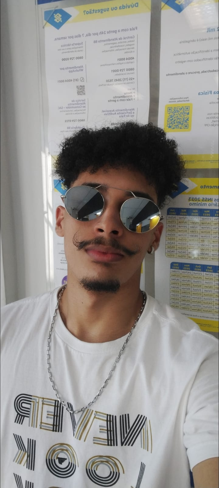

01 / 11Web app
DevRoast
Uma plataforma que analisa código, entrega feedback direto e transforma qualidade técnica em uma experiência divertida.
Explorar projeto ↗Disponível para oportunidades
Felipe Rodrigues, estudante de Engenharia de Computação e desenvolvedor apaixonado por produtos digitais, automação e inteligência artificial.

const developer = {
focus: "solving problems",
tools: ["TypeScript", "Python"],
mindset: "keep learning"
};Sou estudante de Engenharia de Computação na UTFPR e desenvolvedor de software. Gosto de entender o problema por inteiro, testar caminhos e transformar conceitos técnicos em produtos claros e úteis.
Minha experiência passa por aplicações web, visão computacional, automação e programação de robôs. No processo, aprendi que código bom é aquele que resolve a necessidade sem criar outra pelo caminho.
Mais sobre minha trajetória ↗Algumas coisas que construí, estudei e coloquei para funcionar.
Uma plataforma que analisa código, entrega feedback direto e transforma qualidade técnica em uma experiência divertida.
Explorar projeto ↗Aplicação de deep learning para reconhecimento de gestos e segmentação de imagens em tempo real.
Explorar projeto ↗API RESTful completa para gerenciamento de tarefas, com rotas organizadas e operações CRUD.
Explorar projeto ↗Bot de Telegram que monitora marketplaces, coleta preços e envia alertas sobre variações.
Explorar projeto ↗Simulação de pagamentos desenvolvida com foco em orientação a objetos, modularidade e manutenção.
Explorar projeto ↗API de tarefas construída com Node.js puro, HTTP nativo, persistência em JSON e arquitetura modular.
Explorar projeto ↗Link de comunicação por luz visível entre Arduinos, com NRZ, Manchester, auto-baud, CRC-8 e FEC.
Explorar projeto ↗Simulador numérico de transferência de calor em microprocessadores, com modelos transiente, Laplace e Poisson.
Explorar projeto ↗Compilador desenvolvido com Java e ANTLR, incluindo gramática própria, análise e geração de código.
Explorar projeto ↗Aplicação web para centralizar links, com interface responsiva, animações e publicação na Vercel.
Explorar projeto ↗Simulador de um subconjunto da arquitetura MIPS com interface gráfica, registradores e execução passo a passo.
Explorar projeto ↗Python, Java, JavaScript, TypeScript, C/C++, SQL
Node.js, Express, React, Next.js, APIs REST
PyTorch, OpenCV, Pandas, Scikit-Learn, MATLAB
Git, Docker, Linux, Playwright, Figma
Estou aberto a conversar sobre estágio, projetos e oportunidades para aprender fazendo.
felipe7rodrigues54@gmail.com ↗